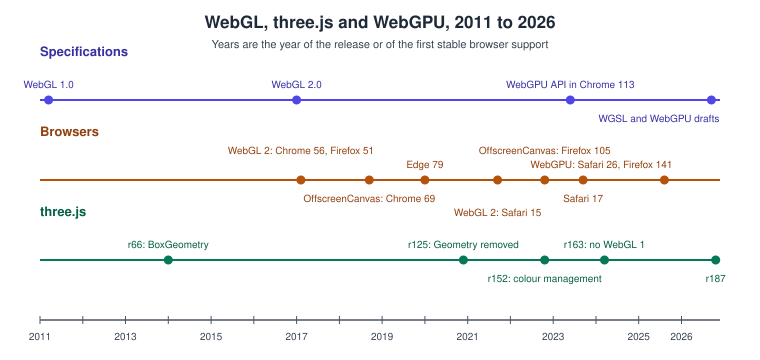
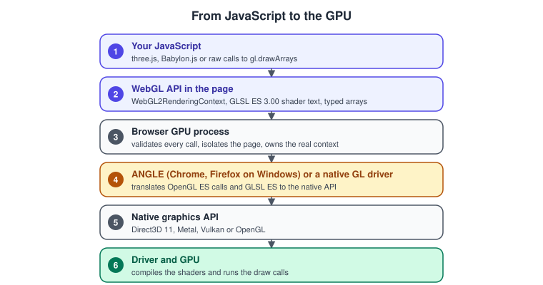

WebGL
|
This content was generated with the assistance of AI and should be verified against the official documentation before being relied on in production. |
WebGL is the JavaScript binding of OpenGL ES that lets a web page draw hardware-accelerated 2D and 3D graphics on a
<canvas> element, with no plug-in. This sub-section teaches raw WebGL 2 with GLSL ES 3.00, the three.js library (revision
r187) that most real projects use on top of it, and WebGPU, the successor API that three.js is moving to, which it covers as
context and as a comparison. It follows two tracks of one running example, the Bookshelf scene, from a first triangle to a
small game, and it says plainly where WebGL stands in 2026: finished and stable, available in every evergreen browser, still the
default renderer of three.js, and no longer where new features arrive. The pages build on the general pages of
Graphics & Games; read those first if the rendering pipeline or the transformation chain are new
to you. For a fast first taste, the page
Canvas, WebGL & Three.js draws a 2D canvas, a short WebGL 2
triangle and a minimal three.js cube.
What WebGL, three.js and WebGPU are
| Name | What it is |
|---|---|
WebGL 1.0 and 2.0 |
Khronos specifications of a JavaScript API, based on OpenGL ES 2.0 and 3.0, with the shading languages GLSL ES 1.00 and 3.00. The browser implements it; there is nothing to install. The API is a state machine on a rendering context obtained from a canvas. |
three.js |
An open-source JavaScript library that wraps WebGL (and, since the |
WebGPU and WGSL |
The W3C successor API and its shading language, with explicit pipelines, bind groups and compute shaders. It is still a W3C draft and, according to MDN, not yet Baseline. |
Babylon.js |
Another browser 3D engine with its own scene graph and tools. It is only named here; see its documentation for details. |
WebGL gives you the GPU and nothing else: you write the shaders, upload the buffers, manage the memory and handle the lost context yourself. That is why most applications use a library, and why learning raw WebGL first makes a library’s behaviour predictable. The reasoning about when each layer pays off is in Choosing an API or Engine.
The family tree

WebGL 1.0 appeared in 2011 as the browser binding of OpenGL ES 2.0, years before Safari or Internet Explorer shipped it reliably. WebGL 2.0, based on OpenGL ES 3.0, arrived in Chrome 56 and Firefox 51 in 2017 and in Safari and iOS 15 in 2021, which completed support in every evergreen browser. WebGPU reached Chrome and Edge 113 in 2023 and Safari 26 in 2025. The details, the feature matrix and the support grid are on WebGL Versions and Browser Support and WebGPU: Overview and Comparison with WebGL.

The same ES lineage runs through native OpenGL ES on Android (see Graphics: Canvas, OpenGL ES and GLTextureView) and through the OpenGL sub-section, which also explains how the GL, GLSL and WebGL versions map to each other on OpenGL and WebGL.
Version baseline
The facts below were checked on 1 November 2026 against the official pages cited in the last column. Items that follow the news of a draft or of a release can change, so check them again before relying on them.
| Item | Version and status | Source |
|---|---|---|
WebGL 1.0 |
Based on OpenGL ES 2.0 and GLSL ES 1.00. The last numbered release is 1.0.3; the editor’s draft is dated 30 June 2026. |
|
WebGL 2.0 |
Based on OpenGL ES 3.0 and GLSL ES 3.00 ( |
|
WebGL 2 support |
Chrome 56, Firefox 51, Safari and iOS 15 and Edge 79. About 97 percent of global usage. |
|
OffscreenCanvas |
Chrome 69, Firefox 105 and Safari 17. |
|
three.js |
r187, published on npm as |
three.js releases, Migration Guide, WebGPURenderer manual page |
WebGPU and WGSL |
W3C Candidate Recommendation Drafts: WebGPU of 15 September 2026 and WGSL of 26 October 2026. MDN marks the API as not Baseline, and it needs a secure (HTTPS) context. |
|
WebGPU in browsers |
Chrome and Edge 113 on Windows, macOS and ChromeOS; Chrome 121 on Android 12 and later; Firefox 141 on Windows; Safari 26 on macOS, iOS, iPadOS and visionOS. Linux support is partial and the official page still says it is not yet available there; other Firefox platforms were pre-release, so confirm them on the support table. |
|
Ecosystem |
webgl2fundamentals.org, Spector.js, glMatrix, twgl and lil-gui are community tools used in the examples; they are named, not cited as official documentation. |
The project websites |
When to choose what
Choose raw WebGL 2 when you are learning how the pipeline works, when the program is small and special (a visualisation, a
shader toy, a custom renderer) or when a library’s weight is not acceptable. Choose three.js for nearly everything else:
it manages shaders, state, loaders and animation for you and runs everywhere WebGL 2 does. Choose WebGPU, directly or
through the WebGPURenderer, for compute shaders, for large scenes that are limited by the CPU cost of draw calls, or for new
projects that can accept the current browser support. The general criteria are in
Choosing an API or Engine.
What’s covered
Orientation
| Page | Covers |
|---|---|
WebGL 1 against WebGL 2, the ES lineage, support numbers, ANGLE, context attributes and feature detection. |
|
The corrections for the three books, row by row. |
Raw WebGL
| Page | Covers |
|---|---|
The canvas, the context, shaders, a buffer, a vertex array object, drawing and error checking. |
|
Vertex processing, clip space, rasterisation, the fragment stage and per-fragment operations. |
|
Both shader versions side by side, precision qualifiers and porting. |
|
Typed arrays, interleaving, indices, uniform blocks with std140 and vertex array objects. |
|
Model, view and projection matrices with glMatrix, and perspective and orthographic cameras. |
|
Upload, mipmaps, filtering, wrapping, sampler objects, flipping and cross-origin images. |
|
Normals, Lambert, Blinn-Phong, normal mapping and linear light. |
|
Framebuffer objects, multiple render targets, multisampling and the shadow pass. |
|
Instancing, transform feedback, 3D and array textures, integer textures, queries and fences. |
|
Detection, the extensions you meet most often, fallbacks and compressed texture formats. |
|
The context-lost and context-restored events and a resource registry that rebuilds everything. |
|
Rendering from a worker and proxying input. |
|
Batching, blocking calls, parallel shader compilation, asynchronous readback, timer queries and tools. |
|
Cross-origin textures, tainted canvases and fingerprinting. |
three.js
| Page | Covers |
|---|---|
npm with Vite or an import map, the object model, the render loop and resizing. |
|
|
|
|
|
The material family, metalness and roughness, material arrays and transparency. |
|
Loaders, colour spaces, tone mapping, KTX2 and environment maps. |
|
Physical light units, light types, shadow maps and bias. |
|
|
|
Mixers, clips, actions, skinning, morph targets and the |
|
|
|
|
|
|
|
|
|
|
WebGPU
| Page | Covers |
|---|---|
WebGPU concepts mapped to WebGL, WGSL against GLSL, the lit rotating book and the 2026 support status. |
|
The one-page A4 summary and the PDF to download. |
Coverage map
Official documentation areas
| Area | Official documentation | Pages |
|---|---|---|
Specifications |
The Khronos WebGL 1.0 and 2.0 specifications, the extension registry, the conformance suite and the GLSL ES 1.00 and 3.00 specifications |
WebGL Versions and Browser Support, GLSL ES 1.00 and 3.00 in WebGL, Context Loss and Robustness |
MDN WebGL API |
The MDN reference and tutorial: getting started, lighting, animated textures, data, extensions, constants, compressed texture formats, model-view-projection and matrix maths |
Your First Triangle in WebGL 2, Buffers, Attributes, Uniforms and VAOs, Transforms and Cameras, Textures and Samplers in WebGL |
MDN best practices |
Guaranteed limits, avoiding blocking calls, asynchronous readback, |
|
MDN extensions |
One page per extension, such as |
|
OffscreenCanvas |
MDN OffscreenCanvas and the three.js manual page on it |
|
three.js |
The manual (fundamentals, tips, optimisation, solutions, WebGPU and WebXR), the API documentation, the examples, the Migration Guide and the TSL wiki |
three.js: Getting Started, three.js Performance and Disposal, three.js WebGPURenderer and TSL, What Has Changed Since the Older WebGL and three.js Guides |
WebGPU |
The W3C specifications, MDN, the Chrome developer documentation and the WebGPU samples |
WebGPU: Overview and Comparison with WebGL, three.js WebGPURenderer and TSL |
Ecosystem tools |
Spector.js, glMatrix, twgl and lil-gui, named as community tools and not as official documentation |
Concepts from the books
The three books are listed in the section bibliography. The short names are PAR (Tony Parisi, WebGL: Up and Running), LTJ (Jos Dirksen, Learning Three.js, 2nd edition) and TCB (Jos Dirksen, Three.js Cookbook). Each cell lists the chapters that contribute the concept, and the last column the pages that cover it. The books are consulted references: no text, figure or code is copied from them, and where a book and the official documentation disagree the documentation is followed.
| Concept | PAR | LTJ | TCB | Pages |
|---|---|---|---|---|
Raw WebGL pipeline, buffers, shaders |
1 to 3 |
- |
- |
Your First Triangle in WebGL 2, The WebGL Rendering Pipeline, Buffers, Attributes, Uniforms and VAOs, GLSL ES 1.00 and 3.00 in WebGL |
Scene graph and transforms |
3 |
2 and 8 |
2 |
|
Geometry, including custom and parametric |
3 |
5 and 6 |
2 |
|
Materials, lights, shadows |
3 |
3 and 4 |
4 and 5 |
three.js Materials and PBR, three.js Lights and Shadows, Lighting in WebGL Shaders |
Textures, environment maps, bump and normal maps |
3 and 6 |
10 |
4 |
Textures and Samplers in WebGL, three.js Textures and Colour Management |
Cameras and controls |
5 |
2 and 9 |
3 |
Transforms and Cameras, three.js Interaction, Picking and Controls |
Picking and dragging |
5 |
9 |
3 and 7 |
|
Animation (tweens, morphs, skinning) |
4 |
9 |
7 |
|
Particles and points |
3 and 8 |
7 |
6 |
|
Custom shaders |
3 |
4 and 11 |
5 |
GLSL ES 1.00 and 3.00 in WebGL, three.js Custom Shaders (GLSL) |
Post-processing and render targets |
- |
11 |
6 |
Framebuffers and Render-to-Texture in WebGL 2, three.js Post-processing |
Model formats and Blender |
7 |
8 |
2 and 7 |
|
2D and DOM overlays, canvas and video textures |
6 |
10 |
3 and 4 |
three.js Textures and Colour Management, three.js Interaction, Picking and Controls |
Context loss, detection, CORS |
7 |
1 |
1 |
Context Loss and Robustness, WebGL Versions and Browser Support, WebGL Security, CORS and Privacy |
Physics and audio |
8 (sound) |
12 |
7 |
three.js Animation System, which links the physics page of the three.js manual, and Physics, Audio and Input Basics |
Game loop, a first game |
2 and 8 |
1 |
1 |
The running example, three.js: Getting Started, The Game Loop and Frame Timing |
Official concepts missing from the books
No book covers WebGL 2, WebGPU, TSL or OffscreenCanvas, and several features that every current program uses were introduced after all three books were written. They are covered from the official documentation.
| Concept | Pages |
|---|---|
WebGL 2 and GLSL ES 3.00 |
WebGL Versions and Browser Support, GLSL ES 1.00 and 3.00 in WebGL |
Vertex array objects and uniform buffer objects (std140) |
|
Immutable textures ( |
|
Multiple render targets and multisampled blits |
|
Instancing, transform feedback, 3D and array textures, queries and fences |
|
The extension registry and compressed texture formats (ASTC, ETC, S3TC, Basis and KTX2) |
|
Parallel shader compilation, asynchronous readback and timer queries |
|
|
|
OffscreenCanvas and workers |
|
ES modules, import maps and Vite |
|
Colour management, |
three.js Textures and Colour Management, Lighting in WebGL Shaders |
Physical light units and |
|
glTF 2.0 with Draco, KTX2 and Meshopt |
|
|
|
|
|
|
|
WebGPU and WGSL |
|
Browser privacy: fingerprinting and timing limits |
Where the books are out of date, the page that covers the concept says so, and What Has Changed Since the Older WebGL and three.js Guides collects the corrections.
Reading path
-
Read WebGL Versions and Browser Support to know which context you request and on which browsers it runs.
-
Draw the first triangle and read The WebGL Rendering Pipeline.
-
Learn data and shaders: GLSL ES 1.00 and 3.00 in WebGL, Buffers, Attributes, Uniforms and VAOs and Transforms and Cameras.
-
Give surfaces an appearance with Textures and Samplers in WebGL and Lighting in WebGL Shaders, then render off-screen with Framebuffers and Render-to-Texture in WebGL 2.
-
Continue with WebGL 2 Advanced Features, WebGL Extensions and the robustness pages on context loss, workers, performance and security.
-
Move to the library with three.js: Getting Started, then the scene graph, geometry, materials, textures, lights, loading models, animation, interaction, custom shaders and post-processing.
-
Finish with three.js Performance and Disposal, the WebGPURenderer and TSL and the WebGPU overview, and keep the WebGL & three.js Cheat Sheet at hand.
Running example
The Bookshelf scene of the section landing page, described in
The Bookshelf scene and shared assets, is built twice. Both
tracks use the shared bookshelf.glb and the textures in the same folder. The PNG textures ship as
they are; the KTX2 versions mentioned on the pages are produced by the reader with toktx or ktx create.
Raw WebGL track (one HTML page and a few ES modules):
-
a triangle (Your First Triangle in WebGL 2)
-
a textured book-cover quad (Textures and Samplers in WebGL)
-
a lit rotating book with the cover texture and a normal map (Lighting in WebGL Shaders)
-
an instanced shelf of books (WebGL 2 Advanced Features)
-
a shadow pass through a framebuffer object (Framebuffers and Render-to-Texture in WebGL 2)
-
colour-ID picking (Framebuffers and Render-to-Texture in WebGL 2 and WebGL Performance and Debugging)
-
recovery from a lost context (Context Loss and Robustness)
-
the same scene in a worker (OffscreenCanvas and Workers)
three.js track (Vite and three@0.187):
-
the shelf and the books from the GLB (Loading Models and glTF in three.js)
-
physically based materials (three.js Materials and PBR)
-
an orbit camera (three.js Interaction, Picking and Controls)
-
a click that pulls a book out of the shelf with a raycaster and an animation clip (three.js Animation System)
-
a tiny game, "catch the falling books", with an HTML score overlay (three.js Interaction, Picking and Controls)
-
bloom (three.js Post-processing)
-
a switch to
WebGPURendererwith a glowing-title TSL material (three.js WebGPURenderer and TSL)
WebGPU: Overview and Comparison with WebGL renders the same lit rotating book with raw WebGPU.
Related material on this site
-
Graphics & Games for the section overview, the shared Bookshelf assets and the bibliography of every book and official source used.
-
WebGL & three.js Cheat Sheet for a one-page printable summary.
-
Canvas, WebGL & Three.js for the quick introduction, and Animations via JavaScript, Web Workers and Modules for the JavaScript background.
-
WebAssembly for WebGL from Rust, and Web & Cross-Platform for WebGPU compute.
-
OpenGL for the desktop and ES lineage of the API.
-
The Rendering Pipeline and Coordinate Spaces and Transforms for the API-neutral background.
Bibliography
Books
The WebGL pages draw on three books. The books are consulted references for concept coverage: no text, figure or code is copied from them, and where a book and the official documentation disagree the documentation is followed. The complete entries, with every other source of the section, are in the section bibliography.
References
-
WebGL 1.0 specification: https://registry.khronos.org/webgl/specs/latest/1.0/
-
WebGL 2.0 specification: https://registry.khronos.org/webgl/specs/latest/2.0/
-
WebGL extension registry: https://registry.khronos.org/webgl/extensions/
-
Khronos WebGL repository: https://github.com/KhronosGroup/WebGL
-
MDN WebGL API: https://developer.mozilla.org/en-US/docs/Web/API/WebGL_API
-
MDN OffscreenCanvas: https://developer.mozilla.org/en-US/docs/Web/API/OffscreenCanvas
-
MDN WebGPU API: https://developer.mozilla.org/en-US/docs/Web/API/WebGPU_API
-
three.js documentation: https://threejs.org/docs/ and manual: https://threejs.org/manual/
-
three.js releases: https://github.com/mrdoob/three.js/releases and Migration Guide: https://github.com/mrdoob/three.js/wiki/Migration-Guide
-
W3C WebGPU: https://www.w3.org/TR/webgpu/ and WGSL: https://www.w3.org/TR/WGSL/
-
Can I use: https://caniuse.com/webgl2, https://caniuse.com/offscreencanvas and https://caniuse.com/webgpu
-
The books and the other sources of the section bibliography